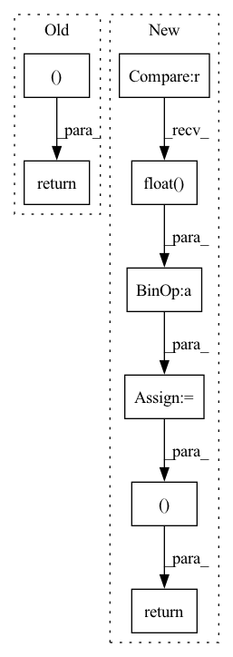

Pattern ID :23137

Before Change
weights = torch.zeros_like(central)
// rescale to 0-1. lower std / var --> weight=1
weights = 1 / (1+weights)
return central, weights
// distance matrix to 3d coords: https://github.com/scikit-learn/scikit-learn/blob/42aff4e2e/sklearn/manifold/_mds.py//L279
def mds_torch(pre_dist_mat, weights=None, iters=10, tol=1e-5, verbose=2):
After Change
elif center == "mean":
central = (distogram * n_bins).sum(dim=-1)
// create mask for last class - (IGNORE_INDEX)
mask = (central <= bins[-2].item()).float()
// mask diagonal to 0 dist
central[np.arange(shape[-2]), np.arange(shape[-3])] = 0.
// provide weights
if wide == "var":
dispersion = (distogram * (n_bins - central.unsqueeze(-1))**2).sum(dim=-1)
elif wide == "std":
dispersion = (distogram * (n_bins - central.unsqueeze(-1))**2).sum(dim=-1).sqrt()
else:
dispersion = torch.zeros_like(central)
// rescale to 0-1. lower std / var --> weight=1
weights = mask / (1+dispersion)
return central, dispersion, weights
// distance matrix to 3d coords: https://github.com/scikit-learn/scikit-learn/blob/42aff4e2e/sklearn/manifold/_mds.py//L279
def mds_torch(pre_dist_mat, weights=None, iters=10, tol=1e-5, verbose=2):
In pattern: SUPERPATTERN
Frequency: 3
Non-data size: 8
Instances
Fragment ID: 73101499
Project Name: lucidrains/alphafold2
Commit Name: c06c4f9c3730bde0428f72a973b0d38632c2646b
Time: 2021-01-16
Author: ericacaide1@gmail.com
File Name: utils.py
M Class Name: AnonimousClass
N Class Name: AnonimousClass
M Method Name: center_distogram_torch(5)
N Method Name: center_distogram_torch(5)
M Parent Class:
N Parent Class:
M File Name: utils.py
N File Name: utils.py
M Start Line: 136
M End Line: 157
N Start Line: 138
N End Line: 164
'>
Before Change
buckets = torch.bucketize(sizes, size_bins)-1
stratified_risks = torch.tensor([losses[buckets == bucket].mean() for bucket in range(size_bins.shape[0])])
print(f"Model output shape: {x.shape}, label shape: {labels.shape}, Sets shape: {sets[2].shape}, sizes: {sizes}, size_bins:{size_bins}, stratified_risks: {stratified_risks}, mse: {mse}")
return losses, sizes, spearman, stratified_risks, mse
def evaluate_from_loss_table(loss_table,n,alpha,delta):
with torch.no_grad():
perm = torch.randperm(loss_table.shape[0])
After Change
size_random_idxs = np.random.choice(sets_full.shape[1],size=sets_full.shape[0])
size_samples = sets_full[range(sets_full.shape[0]),size_random_idxs]
residuals = residuals + [(labels - sets[1]).abs().flatten(start_dim=1)[range(sets_full.shape[0]),size_random_idxs]]
spatial_miscoverages = spatial_miscoverages + [(labels > sets[2]).float() + (labels < sets[0]).float()]
sizes = sizes + [torch.tensor(size_samples),]
losses = torch.cat(losses,dim=0)
sizes = torch.cat(sizes,dim=0)
sizes = sizes + torch.rand(size=sizes.shape).to(sizes.device)*1e-6
residuals = torch.cat(residuals,dim=0).detach().cpu().numpy()
spearman = spearmanr(residuals, sizes)[0]
mse = (residuals*residuals).mean().item()
spatial_miscoverage = torch.cat(spatial_miscoverages, dim=0).detach().cpu().numpy().mean(axis=0).mean(axis=0)
size_bins = torch.tensor([0, torch.quantile(sizes, 0.25), torch.quantile(sizes, 0.5), torch.quantile(sizes, 0.75)])
buckets = torch.bucketize(sizes, size_bins)-1
stratified_risks = torch.tensor([losses[buckets == bucket].mean() for bucket in range(size_bins.shape[0])])
print(f"Model output shape: {x.shape}, label shape: {labels.shape}, Sets shape: {sets[2].shape}, sizes: {sizes}, size_bins:{size_bins}, stratified_risks: {stratified_risks}, mse: {mse}")
return losses, sizes, spearman, stratified_risks, mse, spatial_miscoverage
def evaluate_from_loss_table(loss_table,n,alpha,delta):
with torch.no_grad():
perm = torch.randperm(loss_table.shape[0])
'>
Fragment ID: 73101497
Project Name: aangelopoulos/im2im-uq
Commit Name: eb08020dd8e3947a3c1f6d97819e247c0610dbab
Time: 2022-06-15
Author: angelopoulos@berkeley.edu
File Name: core/calibration/calibrate_model.py
M Class Name: AnonimousClass
N Class Name: AnonimousClass
M Method Name: get_rcps_metrics_from_outputs(4)
N Method Name: get_rcps_metrics_from_outputs(4)
M Parent Class:
N Parent Class:
M File Name: core/calibration/calibrate_model.py
N File Name: core/calibration/calibrate_model.py
M Start Line: 47
M End Line: 57
N Start Line: 35
N End Line: 60
'>
Before Change
model_mean, _, model_log_variance, x_start = self.p_mean_variance(x = x, t = batched_times, x_self_cond = x_self_cond, clip_denoised = clip_denoised)
noise = torch.randn_like(x) if t > 0 else 0. // no noise if t == 0
pred_img = model_mean + (0.5 * model_log_variance).exp() * noise
return pred_img, x_start
@torch.no_grad()
def p_sample_loop(self, shape):
batch, device = shape[0], self.betas.device
After Change
model_mean, _, model_log_variance, x_start = self.p_mean_variance(x = x, t = t, t_next = t_next, clip_denoised = True)
noise = torch.randn_like(x)
// no noise when t == 0
is_last_sampling_timestep = t_next == 0
nonzero_mask = (1 - is_last_sampling_timestep.float()).reshape(b, *((1,) * (len(x.shape) - 1)))
pred = model_mean + nonzero_mask * (0.5 * model_log_variance).exp() * noise
return pred, x_start
@torch.no_grad()
def p_sample_loop(self, shape):
batch, device = shape[0], self.device
'>
Fragment ID: 73101494
Project Name: lucidrains/bit-diffusion
Commit Name: 7b25c9d18c4aa4200c7df429ffa7815641f67021
Time: 2022-08-17
Author: lucidrains@gmail.com
File Name: bit_diffusion/bit_diffusion.py
M Class Name: BitDiffusion
N Class Name: BitDiffusion
M Method Name: p_sample(6)
N Method Name: p_sample(5)
M Parent Class: nn.Module
N Parent Class: nn.Module
M File Name: bit_diffusion/bit_diffusion.py
N File Name: bit_diffusion/bit_diffusion.py
M Start Line: 497
M End Line: 501
N Start Line: 518
N End Line: 526